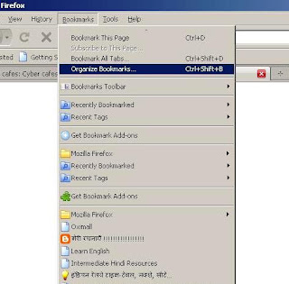
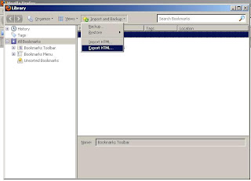
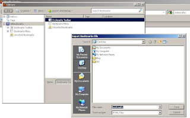
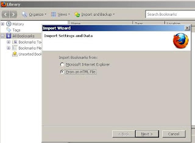

How to backup your Favorite links? How to save my Favorite links?
आपका कम्प्यूटर वायरस के संक्रमण से बीमार है और आप उसे फॉरमेट/विन्डो रिइन्स्टॉल कर रहे हैं पर आप के फायरफॉक्स ब्राऊजर में आपने अब तक जमा किये ढ़ेरों पसंदीदा बुकमार्क्स के खो जाने से चिंतित हैं? क्यों कि फॉरमेट करने से वे सारे खो जायेंगे। इन्हें बचाने का तरीका है कि आप एक एक बुकमार्क को टेक्स्ट फाइल में कॉपी कर लें, लेकिन जब बुकमार्क्स बहुत से हों तो कॉपी करना कम झँझट वाला काम नहीं होगा, और जब आप सिस्टम से परेशान हो कर फॉरमेट करने जा रहे हैं तो यह काम करना आसान नहीं होता।

इस तरह की मुसीबत से बचने का सबसे आसान और सुगम उपाय है कि आप गूगल टूलबार इन्स्टाल करें और पसंदीदा बुकमार्क्स को गूगल के भरोसे पर छोड़ते जायें। यह तो बाद की बात है लेकिन अब क्या किया जाये? चलिये मैं आपको इसका सबसे आसान तरीका बताता हूँ।
- आप अपने फायरफॉक ब्राऊजर को खोले और सबसे ऊपर लिखे Bookmarks पर क्लिक करें अब आपको दिख रहा होगा Organize Bookmarks (इसकी शॉर्ट की है ctrl+shift+B) अब इस ओर्गेनाइज बुकमार्क्स पर क्लिक करें।

- अब आपको एक नई पॉपअप खिड़की मिलेगी, इसमें आपको लिखा हुआ दिख रहा है Import & Backup, बस इसी शब्द पर क्लिक करें। आपको नीचे लिखा हुआ दिख रहा है Export HTML अब इस पर क्लिक कर दें, HTML फाईल को कोई नाम देकर किसी दूसरे ड्राईव पर सेव कर दें (जैसे D:,E:,F:,G:) आप चाहें तो इस फाईल को खोल कर देख भी सकते हैं।

- बस आपका काम हो चुका है, बस आप आराम से सिस्टम को फॉरमेट कीजिये, जब सारा काम सही हो जाये तब फाफा को फिर से इन्स्टाल करें और बुक मार्क्स को Export की बजाय Import करें, पाथ उस ड्राइव का दें जहां आपने उस HTML फाईल को सेव किया था।
- बस आपके सारे पसंदीदा बुकमार्क्स ठीक पहले की तरह फायरफॉक्स बुकमार्क्स में मिल जायेंगे।


अगर आप आई ई Internet Explorer प्रयोग करते हैं और पसंदीदा बुकमार्क्सयह विधी पढ़ने में शायद लम्बी लग रही हो पर जब आप इस विधी का प्रयोग करें तो दस सैकण्ड भी नहीं लगेंगे अपने पसंदीदा लिंक्स को बचाने में।
Internet Explorer में है तब भी आप इस विधी से बुकमार्क्स को बचा सकते हैं। इसके लिए पहले आपको Export की जगह Import करना होगा। इसके लिये आपको इम्पोर्टपाथ इन्टरनेट एक्सप्लोरर का देना होगा।